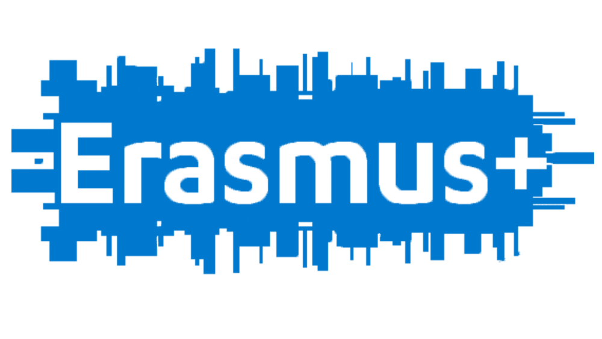

Erasmus+

In one year I went to a total of 4 Erasmus+ projects, in these projects I learned to develop my language skills, the culture of other countries and much more..
- The 4 projects in which I participated are:
- Picture This from 07/05/2019 to 16/05/2019 in Romania
- Halt on Losing time from 09/26/2019 to 04/19/2019 in Romania
- Young entrepreneur spirit from 22/11/2019 to 01/12/2019 in the Czech Republic
- Ready for the Next Age from 12/12/2019 to 12/20/2019 in Romania
- In the first project I experienced for the first time how a European project is carried out, I learned about cameras and editing programs + how to take a decent picture.
- In the second project with little experience, I had the chance to learn about programming and how to work better in TeamWork.
- In the third project, it was an extraordinary and impressive project, but not as impressive as it was interesting, the project was about entrepreneurship, how you can open a business, how you can continue to grow your company, etc...
- In the fourth project of the year, I was called by the team from the second project, to be an organizing Participant, that is, getting more involved in the project, by involvement you can say: Supporting new participants, designing a summary about Erasmus+ projects, promoting the idea of participating in several projects and of course explaining together with the Project Facilitator, the project itself, as it was in the "Ready for the Next Age" project, it was a project about the healthiest life possible and about sports, I, being an athlete, succeeded to give speeches and help project organizers.
What is Erasmus+?
Erasmus+ is the EU's programme to support education, training, youth and sport in Europe.
It has an estimated budget of €26.2 billion. This is nearly double the funding compared to its predecessor programme (2014-2020).
The 2021-2027 programme places a strong focus on social inclusion, the green and digital transitions, and promoting young people’s participation in democratic life.